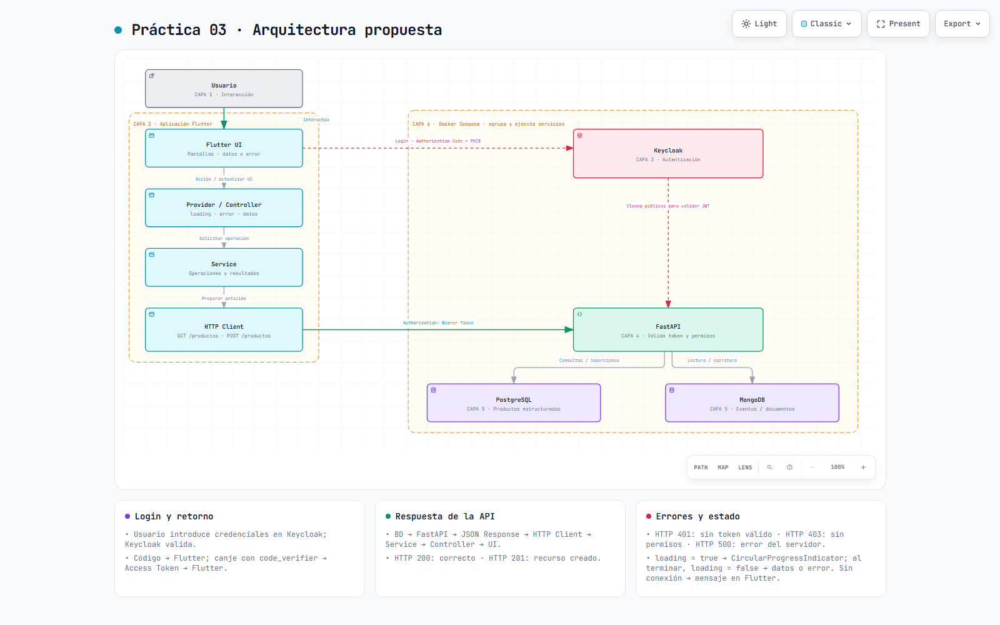
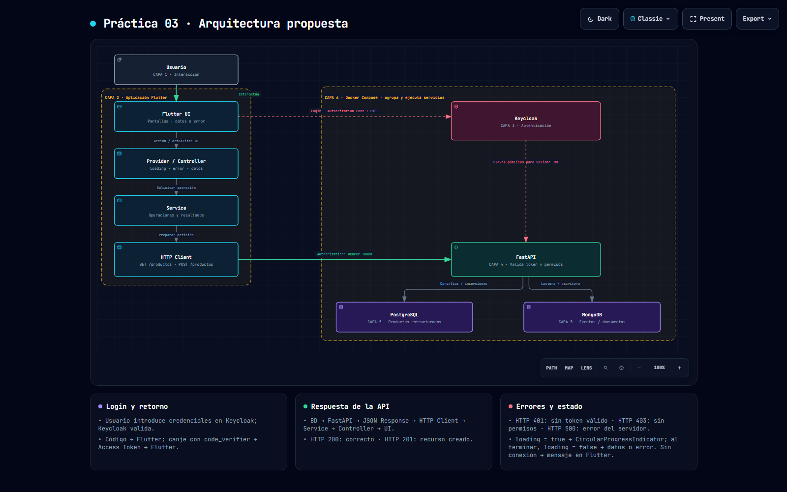
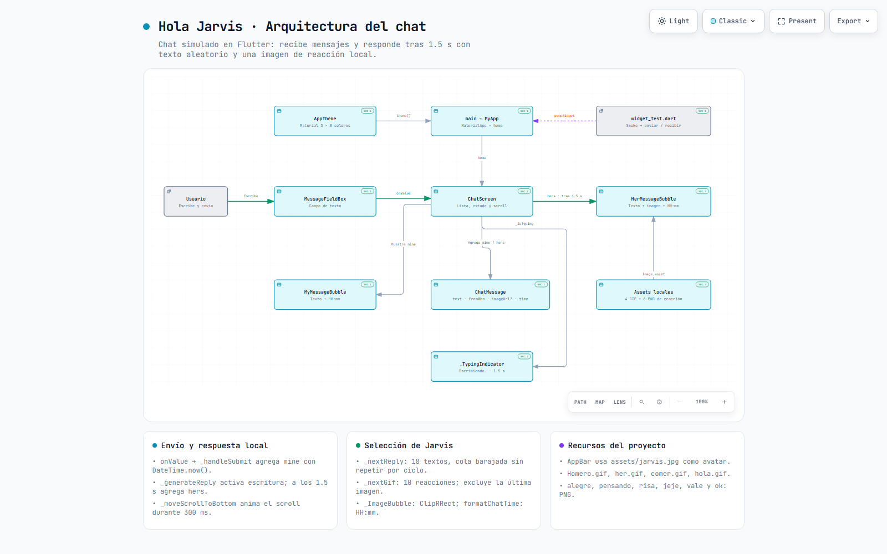
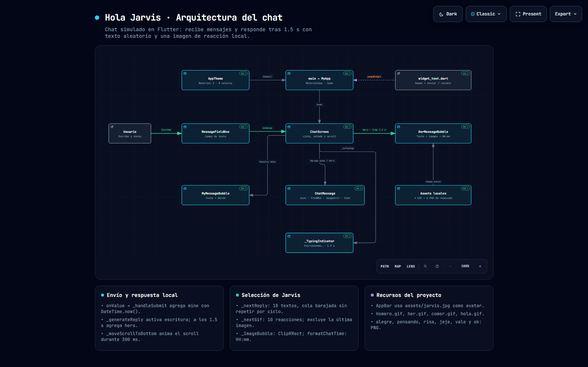

Práctica 03 · Hola Jarvis
Diagrama de arquitectura por capas de la solución propuesta para la Práctica 03: la aplicación Flutter del chat, la autenticación con Keycloak, el backend FastAPI, las bases de datos PostgreSQL y MongoDB, y Docker Compose como infraestructura.
Arquitectura propuesta


El diagrama describe la arquitectura propuesta a partir de los requisitos de la práctica. El repositorio contiene hoy la aplicación de chat en Flutter; Keycloak, FastAPI, PostgreSQL y MongoDB todavía no están implementados. La interfaz fija del visor interactivo (búsqueda, zoom y exportación) está en inglés.
Capas
Usuario
Escribe mensajes, introduce sus credenciales en el navegador y consulta o crea productos.
Aplicación Flutter
UI → Provider / Controller (loading, error, datos) → Service → HTTP Client. El login usa Authorization Code + PKCE y el token se adjunta como Authorization: Bearer.
Autenticación
Keycloak: valida las credenciales, devuelve el código de autorización y genera el Access Token. Expone además sus claves públicas para validar el JWT.
Backend
FastAPI: GET /productos y POST /productos. Valida el Access Token y los permisos antes de operar; responde con JSON y un código HTTP.
Datos
PostgreSQL para la información estructurada de productos y MongoDB para documentos, eventos o registros. No todas las peticiones usan ambas bases.
Infraestructura
Docker Compose agrupa y ejecuta Keycloak, FastAPI, PostgreSQL y MongoDB. Es un contenedor de despliegue, no un intermediario de las peticiones; Flutter se ejecuta fuera.
Flujos
- Inicio de sesión. Flutter inicia Authorization Code + PKCE en el navegador del sistema. El usuario introduce sus credenciales en Keycloak, que devuelve un código a la app. La app canjea el código con el
code_verifiery recibe el Access Token; las credenciales nunca llegan a FastAPI. - Consulta o creación. Usuario → UI → Controller → Service → HTTP Client → FastAPI, con
Authorization: Bearer TOKEN. FastAPI valida el token y los permisos antes de consultar o insertar. - Retorno. PostgreSQL / MongoDB → FastAPI → respuesta JSON y código HTTP → HTTP Client → Service → Controller → UI.
- Estado. Antes de iniciar, el Controller pone
loading = truey la UI muestraCircularProgressIndicator. Al terminar, incluso si falla,loading = falsey la UI muestra datos o el mensaje de error.
Respuestas HTTP
| Situación | Resultado |
|---|---|
| Consulta correcta | HTTP 200 + JSON |
| Recurso creado | HTTP 201 + JSON |
| Token ausente, inválido o vencido | HTTP 401 |
| Token válido, permisos insuficientes | HTTP 403 |
| Error del servidor | HTTP 500 |
| Sin conexión | Error local; Flutter muestra un mensaje, sin código HTTP recibido |
Chat implementado
El segundo diagrama documenta lo que sí está en el repositorio: main.dart, el tema Material 3, ChatScreen con la lista y el estado, el campo de escritura, las burbujas de ambos participantes y el modelo ChatMessage con su hora.


Las vistas previas se regeneran con node tool/diagramas/exportar.mjs; los diagramas son archivos HTML autónomos, sin CDN ni dependencias de red.